Method checks PASS
No backend change: the PR changes 0 .cs/.csproj/.razor files (only mobile/ and proof docs). The history endpoint GET /sessions/{sid}/history exists in CcDirector.ControlApi/SessionHistoryEndpoint.cs and is reachable through the Gateway catch-all /sessions/{sid}/{**rest} proxy (SessionWsProxyEndpoints.cs line 101) with the Bearer - confirmed by code read; no change asserted.
dotnet build does not invoke npm: the BuildMobileApp target is gated RunMobileBuild == 'Release' or BuildMobile=true. Empirically: dotnet build cc-director.sln -c Debug => Build succeeded, 0 Warning(s), 0 Error(s), with no [BuildMobileApp]/npm lines.
TypeScript ports are 1:1 with the desktop C#: 19 independent parity assertions (see qa-parity-test.mts) over cleanForReading (ANSI strip, wrapper-block drop, placeholder-chip, generics untouched, fenced-code skip), extractLinks (URLs + absolute paths only, dedup, trailing-punctuation), and mapHistory (default filter hides tool/result/thinking, per-part truncation caps 400/160/600/2000, speaker assignment You/Assistant/Tool result) - ALL PASS. Manual read of bubbleMapper.ts / historyText.ts / historyLinks.ts / historyMarkdown.ts against the C# originals confirms faithful translation.
AC1 - Terminal/Chat toggle shows cleaned history, not the raw terminal PASS
Expected: a toggle switches to a Chat view of readable bubbles, distinct from the raw PTY mirror.
Actual: Chat (qa-02) renders You/Assistant bubbles; the same session's Terminal tab (qa-14) shows the raw byte stream "RAW TERMINAL MIRROR / $ claude --resume". Clearly different surfaces for one session.

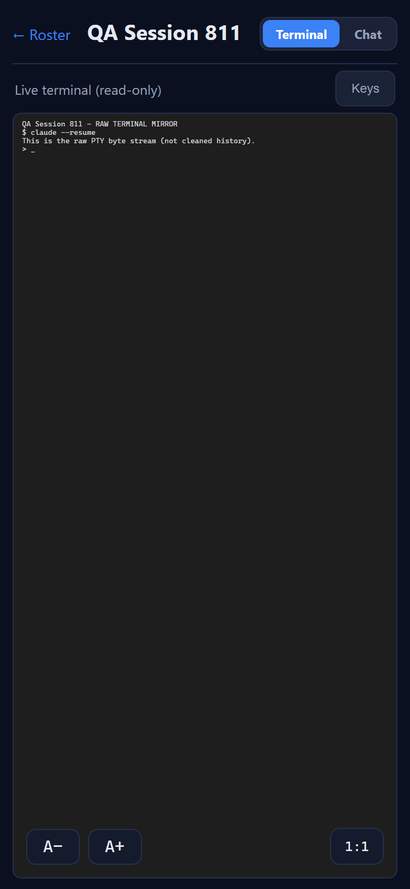
AC2 - Default shows only You + Assistant; tool calls/results/thinking hidden PASS
Expected: on a session that HAS tool calls/results/thinking, none appear by default.
Actual: all three "Show" boxes unchecked; the assistant bubble carries no (thinking), [tool], or [result] text, and the pure tool-result "Tool result" bubble is omitted entirely. Only You + Assistant prose render.
AC3 - Filter reveals Tool calls / Results / Thinking PASS
Expected: each toggle independently includes/excludes its part kind, matching HistoryBubbleMapper.
Actual: Tool calls on => [tool] Read {"file_path":...} appears (qa-03). +Results => [result] ... and the gold "Tool result" bubble appear (qa-04). +Thinking => (thinking) ... appears (qa-05). Unchecking hides each again (qa-02/qa-06).
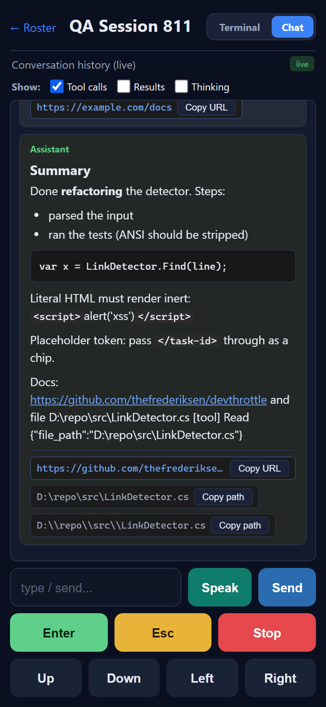
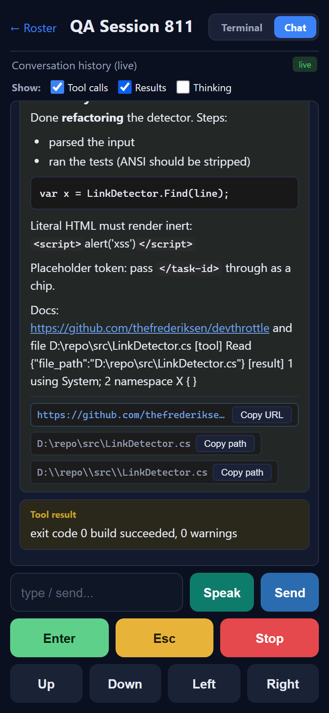
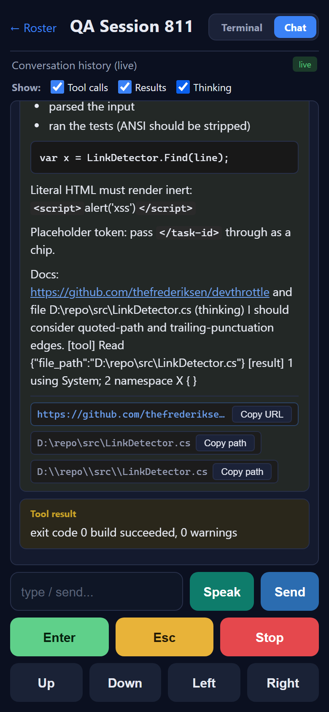
AC4 - Desktop-parity rendering (You/Assistant, Markdown, HTML disabled, ANSI/wrapper cleaned, links) PASS
Expected: Markdown rendered, raw HTML inert, ANSI/system-reminder stripped, links clickable with copy buttons.
Actual (qa-06): heading "Summary", bold, bullet list, fenced code block rendered; <script>alert('xss')</script> shown as inert literal text; ANSI codes stripped ("ran the tests"); <system-reminder> block dropped; </task-id> placeholder rendered as a monospace chip; the github URL is a clickable link and both the URL and D:\repo\src\LinkDetector.cs path have Copy buttons. You vs Assistant visually distinct (blue vs green speaker).
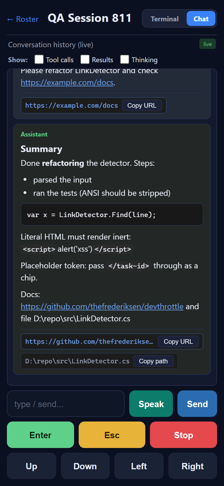
AC5 - Live update (~2.5s) without yanking a scrolled-up reader PASS
Expected: a new turn appends live; a scrolled-up reader is not moved.
Actual: with the view scrolled to the top, a new turn arrived during a >2.5s wait and the scroll did NOT move (qa-ac5-scroll.txt: scrollTop before=0, after=0, no-yank PASS=True, qa-12). Scrolling to the bottom shows the live-appended "A NEW ASSISTANT-DRIVEN TURN" (qa-13).
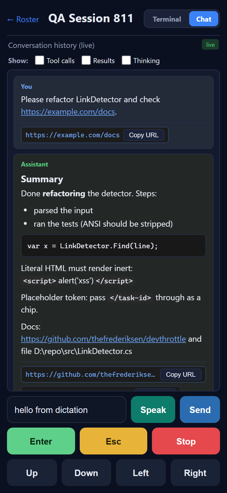
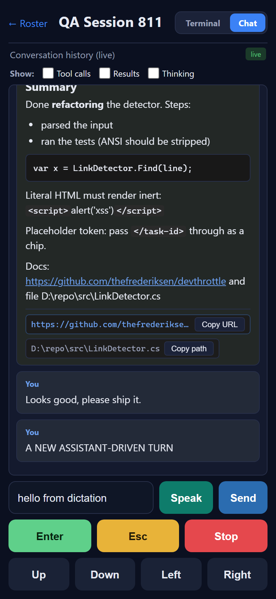
AC6 - Type + Send submits and the new user turn appears PASS
Expected: POST /prompt 2xx; the user turn appears.
Actual: wire log (qa-requests-auth-on.jsonl): POST /sessions/.../prompt body={"text":"Looks good, please ship it.","appendEnter":true} with Bearer, 200; status flashes "Sent" (qa-07) and the "You: Looks good, please ship it." bubble appears in the transcript (qa-10/qa-11 background, qa-13).
AC7 - Control keys identical to Terminal PASS
Expected: Enter "\r" (AppendEnter=false), Esc /escape, Stop /interrupt, arrows ESC[A/[B/[C/[D via /prompt AppendEnter=false.
Actual (wire log): Enter {"text":"\r","appendEnter":false}; Esc POST /escape; Stop POST /interrupt; Up ESC[A; Down ESC[B; Left ESC[D; Right ESC[C - all AppendEnter=false, all Bearer, all 2xx. Byte-exact match to the issue.
| Key | Request |
|---|---|
| Enter | POST /prompt {"text":"\r","appendEnter":false} |
| Esc | POST /escape |
| Stop | POST /interrupt |
| Up / Down / Left / Right | POST /prompt ESC[A / ESC[B / ESC[D / ESC[C, appendEnter:false |
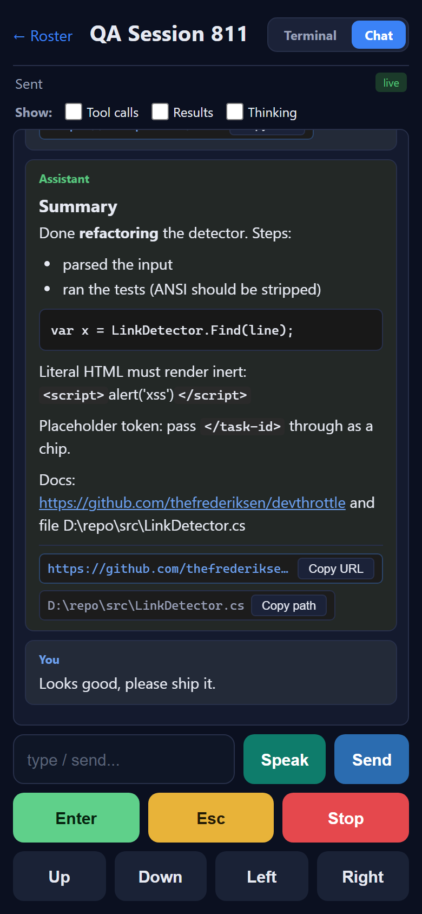
AC8 - Speak opens the shared dictation dialog; Insert/Send work PASS
Expected: the SAME dialog (Cancel/Pause-Resume/Insert/Send, RECORDING->TRANSCRIBING->PAUSED); Insert places, Send submits.
Actual: RECORDING with timer + waveform + Cancel/Pause/Insert/Send (qa-09); PAUSED with the transcribed text and Cancel/Resume/Insert/Send (qa-10); Insert drops "hello from dictation" into the input box, status "Inserted" (qa-11). The utterance flow fired with Bearer: POST /wingman/utterance/upload, PUT .../chunk/0, POST .../complete.
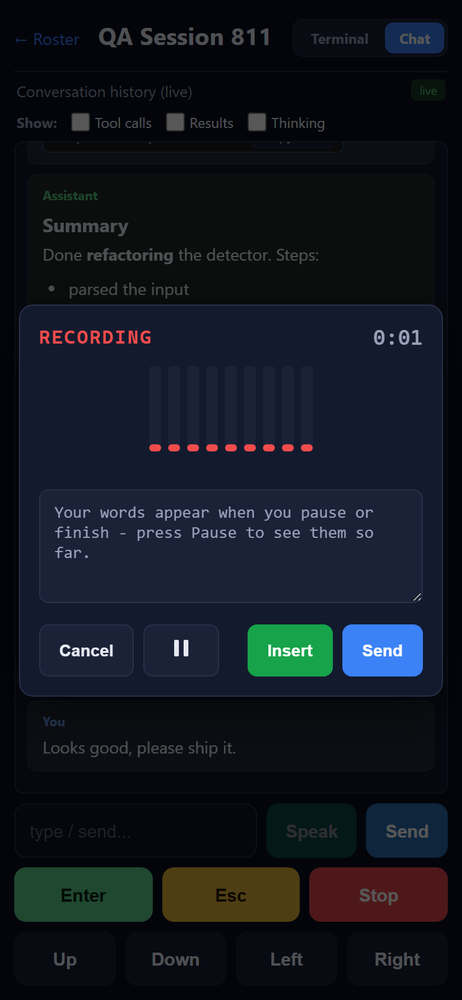
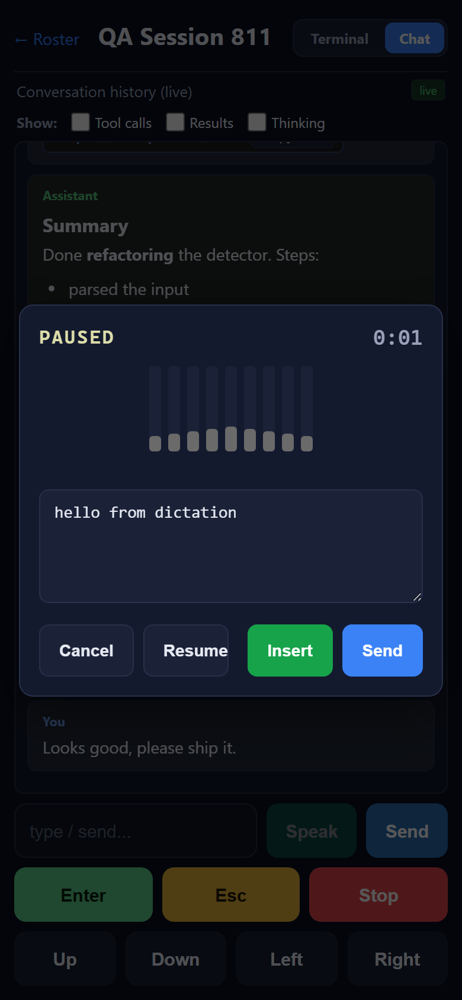
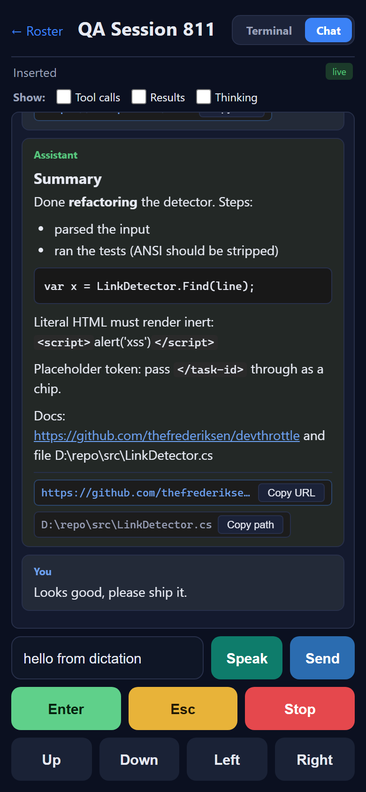
AC9 - Move between Chat and Terminal; both control the same session PASS
Expected: a Send from one view is visible from the other for the same session id.
Actual: from the Terminal tab a Send of "sent from the Terminal view" was issued; switching back to Chat, that turn appears in the same session's history (qa-15), alongside the Chat-sent and live-appended turns.
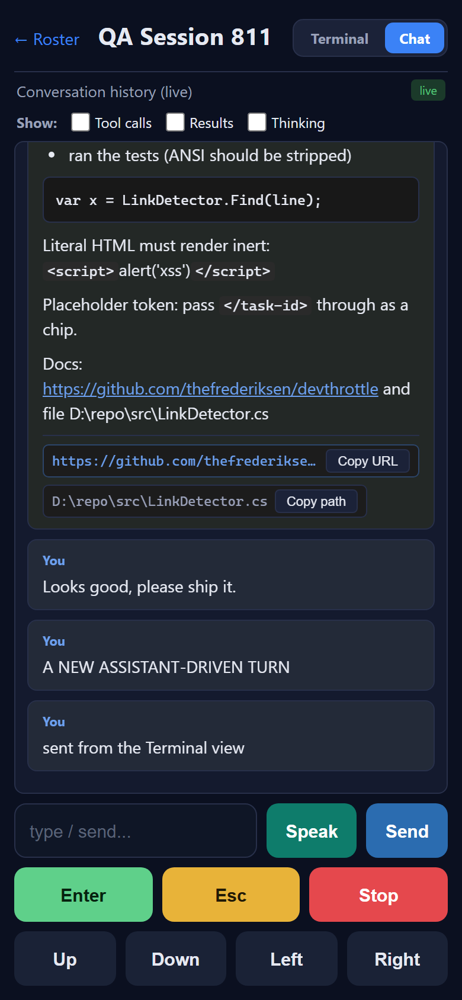
AC10 - Bearer on history + control calls; works auth on and off PASS
Expected: every history/control call carries the Bearer; the view works with global Gateway auth on or off.
Actual: auth-ON wire log shows EVERY history GET, prompt/escape/interrupt POST, and utterance call carries Bearer and returns 2xx (the roster and full Chat rendered, qa-01/qa-02..qa-15). A focused response probe (qa-probe-sessions.jsonl) confirms all /sessions data calls return 200 with Bearer (the service worker even re-issues the call with the Bearer preserved); no 401. Auth-OFF: the page is served without an injected token, so calls carry no Bearer and the server does not require one - the Chat renders the full cleaned history regardless (qa-16).